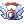

Access Quests
Jump to navigation
Jump to search
Quests that are required to access certain game content (dungeons, instances, etc.) are listed on this page.
Note that in NovaRO, players are often exempted from doing access quests for most content (often from older episodes). If a certain piece of content is not listed here, there are likely no prerequisites for it in NovaRO. With that said, do bear in mind that the following tables may be incomplete or outdated (in which case, please kindly update the tables).
Official Content
| Episode | Content | Type | Quest | Access Gained | Remark |
|---|---|---|---|---|---|
| 18 | Villa of Deception | Instance | Direction of Prayer | After Step 18 | |
| 18 | Sanctuary Purification | Instance | Direction of Prayer | After Step 16 | |
| 18 | Grey Wolf Forest | Field | Gaining access to the Grey Wolf Village | After Step 30 | |
| 18 | Labyrinth of Oz | Dungeon | Gaining access to the Grey Wolf Village | After Step 30 | |
| 18 | Grey Wolf Village | Town | Gaining access to the Grey Wolf Village | After Step 34 | Unlock access by @go wol after acquiring 3000 reputation points
|
| 18 | Illusion of Twins | Dungeon | Illusion of Twins | Upon Completion | |
| 17.2 | Illusion of Underwater | Dungeon | Illusion of Underwater | Upon Completion | |
| 17.2 |  Ep. 17 Storybook Ep. 17 Storybook
|
Quest Skip | Tracking Illusion | Upon Completion | Unlock for other characters in the same account |
| 17.2 | Hey! Sweety! | Instance | Tracking Illusion | After Step 12 | |
| 17.2 | Water Garden | Instance | Water Garden | Upon Completion | |
| 17.2 | Hidden Flower Garden | Instance | Hidden Flower Garden (Story Mode) | Upon Completion | |
| 17.2 | Tartaros' Warehouse Basement | Dungeon | Checking the Underground Condition | After Step 7 | |
| 17.2 | Tartaros' Warehouse 1F | Dungeon | Gaining access to Varmundt's Mansion | Upon Completion | |
| 17.2 | Varmundt's Mansion Bath | Dungeon | Gaining access to Varmundt's Mansion | Upon Completion | |
| 17.2 | Varmundt's Mansion Library | Dungeon | Gaining access to Varmundt's Mansion | Upon Completion | |
| 17.2 | Lost in Time | Instance | Gaining access to Varmundt's Mansion | After Step 10 | |
| 17.2 | Lost Valley | Dungeon | Gaining access to Varmundt's Mansion | After Step 10 | |
| 17.2 | Second Power Plant | Dungeon | Gaining access to Varmundt's Mansion | Upon Completion | |
| 17.2 | First Power Plant | Dungeon | Gaining access to Varmundt's Mansion | After Step 5 | |
| 17.2 | Sewage Treatment Plant | Dungeon | Gaining access to Varmundt's Mansion | After Step 2 | |
| 17.2 | Varmundt's Mansion | Town | Gaining access to Varmundt's Mansion | Upon Completion | Unlock access by Nillem or  Magician's Bell Magician's Bell
|
| EDDA | Bioresearch Laboratory | Instance | Bioresearch Laboratory (Exploration Mode) | Upon Completion | |
| EDDA | Fall of Glast Heim | Instance | Fall of Glast Heim (Story Mode) | Upon Completion | |
| 17.1 | Illusion of Labyrinth | Dungeon | Illusion of Labyrinth | Upon Completion | |
| 17.1 | Cor Mission | Instance | Capturing Elyumina | Upon Completion | |
| 17.1 | OS Mission | Instance | Old Memories | Upon Completion | |
| 17.1 | Cor | Town | Old Memories | Upon Completion | Unlock access by @go cor
|
| 17.1 | Rudus | Dungeon | Rudus Investigation | After Step 6 | |
| 17.1 | Cat on Bullet | Special Area | Rudus Investigation | After Step 3 | |
| N/A | Glast Heim: Challenge Mode | Instance | Old Glast Heim (Hard Mode) | Upon Completion | |
| 16.2 | Illusion of Teddy Bear | Dungeon | Illusion of Teddy Bear | Upon Completion | |
| 16.2 | Illusion of Abyss | Dungeon | Illusion of Abyss | Upon Completion | |
| 16.2 | Illusion of Vampire | Dungeon | Illusion of Vampire | Upon Completion | |
| 16.2 | Illusion of Moonlight | Dungeon | Illusion of Moonlight | Upon Completion | |
| 16.2 | Ep. 16 Storybook | Quest Skip | Heart Hunter War Base 1 | Upon Completion | Unlock for other characters in the same account |
| 16.2 | Werner's Laboratory: Central Room | Instance | Heart Hunter War Base 1 | Upon Completion | |
| 16.2 | Heart Hunter War Base (Daily) | Instance | Heart Hunter War Base 1 | Upon Completion | |
| 16.2 | Clana Nemieri | Special Area | Search for Terra Gloria | After Step 17 | |
| 16.1 | Prontera Underground Prison | Dungeon | Restricted Sector | After Step 2 | Unlock Warper > Dungeons > Prontera Underground Prison |
| 16.1 | Sky Fortress | Instance | Room of Consciousness | After Step 6 | Unlock Warper > Instances > Sky Fortress |
| 16.1 | Invaded Prontera | Dungeon | Room of Consciousness | After Step 6 | Can be accessed by Warping to Sky Fortress |
| 16.1 | Room of Consciousness | Instance | Ritual of Blessing | Upon Completion | |
| 15.2 | Phantasmagorica Storybook | Quest Skip | Vestige | Upon Completion | Unlock for other characters in the same account |
| 15.2 | Last Room | Instance | Vestige | Upon Completion | Unlock Warper > Instances > Last Room |
| 15.2 | Central Laboratory | Instance | Memory Record | After Step 1 | Unlock Warper > Instances > Central Laboratory |
| 14.3 | Decisive Battle Storybook | Quest Skip | Morse's Cave | Upon Completion | Unlock for other characters in the same account |
| 14.3 | Temple of the Demon God | Instance | Morse's Cave | Upon Completion | Can be accessed by Warping to Bios Island or Morse's Cave |
| 14.3 | Morse's Cave | Instance | Bios Island | Upon Completion | Unlock Warper > Instances > Morse Cave |
| 14.3 | Bios Island | Instance | Dimensional Travel | Upon Completion | Unlock Warper > Instances > Bios Island |
| 14.3 | Fire Basin | Dungeon | Dimensional Travel | After Step 9 | Unlock Warper > Dungeons > Fire Basin |
| 14.1 | Wolfchev Storybook | Quest Skip | Dangerous Rumors | Upon Completion | Unlock for other characters in the same account |
| 14.1 | Wolfchev's Laboratory | Instance | Dangerous Rumors | Upon Completion | |
| 14.1 | Buwaya Cave | Instance | Secret in the Woods | Upon Completion | |
| 14.1 | Bakonawa Lake | Instance | Bakonawa Extermination | Upon Completion | |
| 14.1 | Bangungot Hospital | Instance | Nurse in Port Malaya | Upon Completion | |
| 13.3 | Nightmare Scaraba Dungeon | Dungeon | Doha's Secret Orders | After Step 7 | Access through Dirty Vigilante . Need to equip  Ring of the Ancient Wise King and consume a  Scaraba Perfume, the latter is purchasable from Curious Sapha Scaraba Perfume, the latter is purchasable from Curious Sapha
|
| 13.2 | Nidhoggur's Nest | Instance | Guardian of Yggdrasil | Upon Completion | |
| 13.2 | Manuk Field (via ) | Field | New Surroundings | After Step 5 | Can be accessed from Manuk (@go man) without quests
|
| 13.2 | Spledide Field (via ) | Field | New Surroundings | After Step 5 | Can be accessed from Splendide (@go spl) without quests
|
NovaRO Custom Content
| Patch | Content | Type | Quest | Access Gained | Remark |
|---|---|---|---|---|---|
| #181 | Ancient Juperos Storybook | Quest Skip | Ancient Juperos Repeatable Quests | Upon Completion (First Time) | Unlock for other characters in the same account |
| #171 | Ancient Laboratory | Instance | Deciphering the Ancient Tablets | Upon Completion | |
| #171 | Ancient Juperos | Field | Deciphering the Ancient Tablets | Upon Completion | |
| #171 | Juperos Expedition Camp | Special Area | Great Expedition | Upon Completion | Unlock access by @go jup
|
| #113 | The Savage Coast (High Rank Hunts) | Instance (Monster Hunter) | Reidin's Tutorial | Upon Completion | The tutorial requires the player to be wearing at least three Shadow Gears |
| #??? | The Flooded Forest (Low Rank Hunts) | Instance (Monster Hunter) | Reserving the Flooded Forest | Upon Completion |